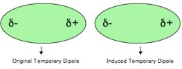
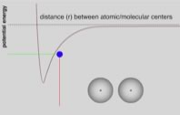

| Chapter 1.7 Interactions between atoms and molecules. |
At this point, we have arrived at a relatively simple model of the atom (not to worry, we will move to more complex and realistic models in the next chapter). This model has a very small, but heavy nucleus that contains both protons and neutrons. Since we talk about biology now and again, take care not to confuse the nucleus of an atom with the nucleus of a cell, they are completely different besides being of very different sizes - for example, there is no barrier round the nucleus of an atom, an atomic nucleus is a clump of protons and neutrons. Surrounding the atomic nucleus are electrons, the same number as there are protons. The atom has no net electrical charge. Where the electrons actually are, however, is a trickier question to answer, because of quantum mechanical considerations, specifically the Heisenberg uncertainty principal (which we will return to in the next chapter). For now let’s just assume the electrons are outside the nucleus and moving. |
1.1 Atoms |
This simple model captures important features that enables us to begin to consider how atoms interact with one another to form molecules and how those molecules can be rearranged – real chemistry! One thing we can ignore (for now) are the interactions involved in holding the nucleus together. There is an attractive force between neutrons and protons, known as the strong nuclear force, that holds these particles together in the nucleus. This is the strongest of all known forces in the universe, approximately 137 times stronger than the electrostatic force, but it acts only at very short ranges, approximately 10-15 m, or about the diameter of the nucleus. The other force involved in nuclear behavior, the "weak force", plays a role in nuclear stability, specifically the stability of neutrons, but it has an even shorter range of action (10-18 m). Since the nucleus is much smaller than the atom itself, we can (and will) ignore the weak and strong forces when we consider chemical interactions. The only other force that appears to exist in the universe is gravity, but it is so weak (more than 10-37 times weaker than the electrostatic force), that we can ignore it from the perspective of chemistry (although it does have relevance for the biology of dinosaurs, elephants, whales, and astronauts). One obvious feature of the world that we experience is that it is full of solid things, things that get in each other's way. Moreover, there is a relationship between temperature and the form things take - consider water. At various temperatures water can be a solid (ice), a liquid, or a gas (water vapor). More unfamiliar substances, such as helium, carbon dioxide, methane, and propane display similar behaviors, changing from a gas to a liquid or solid as the temperature drops. Understanding why, and under what conditions these transitions occur, and why different substances change their "phase" under different conditions will lead us to a clearer understanding of how atoms and molecules interact with one another. If atoms and molecules did not interact with one another, one might expect to be able to walk through walls (since atoms are mostly empty space), but clearly this is not the case. Similarly, you would not “hold together” if your atoms, and the molecules they form, failed to interact. As we will see all atoms and molecules attract one another; a fact that follows directly from what we know about the structure of atoms (and molecules). |
Question to ponder:
Questions for later:
|
Interactions between atoms – a range of effects: Our model of the interactions between atoms will involve (initially) only electrostatic interactions - that is interactions between electrically charged particles, electrons and protons. Let us consider how atoms interact with one another. Taken as a whole, atoms are electrically neutral, but they are composed of electrically charged particles. Moreover, their electrons behave as moving objects [Yes we did tell you to think of electrons as a cloud - because this is a helpful model - but electrons are particles, in fact they appear to be quite close to perfect spheres in shape, In fact “The experiment, which spanned more than a decade, suggests that the electron differs from being perfectly round by less than 0.000000000000000000000000001 cm. This means that if the electron was magnified to the size of the solar system, it would still appear spherical to within the width of a human hair. (Hudson et al "Improved measurement of the shape of the electron" DOI: 10.1038/nature10104).]. While the probability of finding an electron is spread uniformly around an atom when averaged over time; at any one instant there is a probability that the electrons are more on one side of the atom than the other. This leads to momentary fluctuations in the charge density around the atom and leads to a slight charge build up, with one side of the atom being slightly positive and one side being slightly negative. This produces what is known as an instantaneous and transient electrical dipole - a separation of charge. As one atomic dipole nears another atom it will affect the electron density distribution, so for example if the slightly positive end of the atom is located next to another atom, it will attract the electron(s) in the other atom. This results in an overall attraction between the atoms that varies as 1/r6 (Note that this is different than the attraction between fully charged species - the Coulombic attraction -which varies as 1/r2)? What does that mean in practical terms? Well, most importantly it means that the effects of the interaction will be felt only when the two atoms are quite close to one another. |
| As two atoms approach, they will be increasingly attracted to one another. This attraction has its limit, however - when the atoms get close enough the repulsive effects between the negatively charged electrons and the positively charged nuclei increases very rapidly (look back at the opening quote from Feynman). |  |
The repulsive interactions between nuclei are easier to imagine, since they behave more like billiard balls rather than clouds, but bear in mind that the electron clouds also repel each other if they get too close. Reflect back to Rutherford's experiment (please!) He accelerated positively charged α particles, toward a sheet of gold atoms. As an α particle approaches a gold atom's nucleus, the positively (+2) charged α particle and the gold atom’s positively (+79) nucleus begin to repel each other. If no other factors were involved the force of repulsion would approach infinity as the distance between the nuclei (r) approached 0 (you should be able to explain why.) But infinite forces are not something that happens in the real or the atomic/subatomic world, if only because the total energy in the universe is not infinite. As the distance between the α particle and gold nucleus approaches zero, the repulsive interaction grows strong enough to slow the incoming α particle and then push it away from the target particle. If the target particle is heavy compared to the incoming particle, as it was in Rutherford's experiments, the target (gold atoms - which weigh about 50 times as much as the α particle) will not move much, while the incoming α particle will be reflected away. But, f the target and incoming particle are of similar mass, then both will be affected by the interaction and both will move. Interestingly, if the incoming particle had enough initial energy to get close enough (within about 10-15 m) to the target nucleus, then the strong nuclear force of attraction would come into play and start to stabilize the system. The result would be the fusion of the two nuclei, and the creation of a different element, a process that occurs only in very high energy systems such as the center of stars or during a stellar explosion (a supernova). We will return to this idea in chapter 3. Interacting atoms: energy conservation and conversion: As two atoms/molecules approach each other they will feel the force of attraction caused by the electron density distortions, these are known as London dispersion forces (which we will abbreviate as LDF). The effects of these LDF’s depends upon their strength and on the atoms/molecules’ kinetic energies. The type of attraction between atoms and molecules that involves LDF is known as a van der Waals interaction (there are various types of van der Waals interactions which we will get to later). To simplify things (as physicists are wont to do), let us consider a very specific situation. If we assume that there are two isolated atoms, atom1 and atom; the atoms are at rest with respect to one another, but close enough so that the LDFs between them are significant. For this to occur they have to be quite close, because LDFs, which result from the movement of electrons, fall off as 1/r6 where r is the distance between the two atoms. In response to the attractive LDF’s, the atoms begin to move toward each other – potential energy associated with the atoms initial state is converted into kinetic energy (EK = ½mv2). If there was no attraction, the potential energy of the system would be zero. |
| So what happens as they approach each other? The LDF grows stronger and more and more potential energy is converted into kinetic energy (the atoms move faster). [Imagine, as an analogy that the two atoms are balls rolling down opposite sides of a hill towards a valley, their potential energy falls as they move down - but their kinetic energy rises and they speed up.] This continues until the atoms get close enough, at which point the repulsive interactions between the electrons becomes stronger (and if they approach even more closely the repulsive interactions between the positively charged nuclei also come into play). |  |
As the atoms begin to slow down, their kinetic energy is converted back into potential energy. They will eventually stop and then be repelled from one another - potential energy will be converted back into kinetic energy. As they move away, however, repulsion will be replaced by attraction, and they will slow - their kinetic energy will be converted back into potential energy. With no other factors acting within the system, the two atoms will oscillate forever. Here we have a core principle that we will return to time and again - a stabilizing interaction always lowers the potential energy of the system, and conversely, a destabilizing interaction always raises the energy of the system. In an isolated system with only two atoms, this oscillation would continue forever because there is no way to change the energy of the system. This situation doesn’t occur in “real life” because two-atom systems do not occur. For example even in a gas, where the atoms are far apart, there are typically large numbers of atoms that have a range of speeds (and kinetic energies), present in a system . These atoms frequently collide and transfer energy. Therefore, when two atoms collide and start to oscillate, some of the energy may be transferred to other particles by collisions. If this happens a stable interaction can form between the two particles and make them stick together. If more particles approach, they can also become attracted, and if their extra energy is transferred by collisions, the particles can form a bigger and bigger “clump”. |
As we discussed earlier, London dispersion forces arise due to the fluctuations of electron density around nuclei, and are a feature common to all atoms; all atoms/molecules attract one another in this manner. The distance between atoms/molecules where this attraction is greatest is known as the van der Waals radius of the atom/molecule – if atoms/molecules move closer to one another than their van der Waals radii, they repel one another. The van der Waals radius of an atom is characteristic for each type of atom/element. As mentioned earlier, it is only under conditions of extreme temperature and pressure that the nuclei of the two atoms can fuse together to form a new type of atom; such a nuclear/atomic fusion event results in the interconversion of matter into energy. |
1.1
Atoms |
Question to answer:
Questions for ponder:
Questions for later:
|
| 27-Jun-2012 |